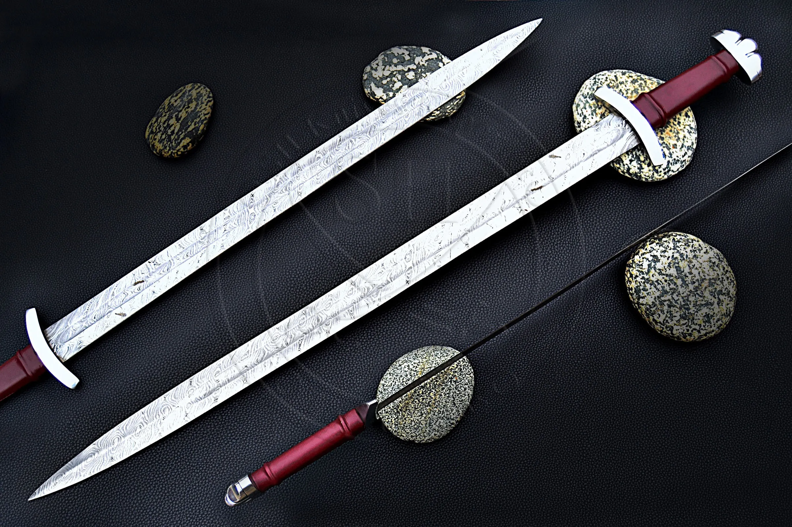
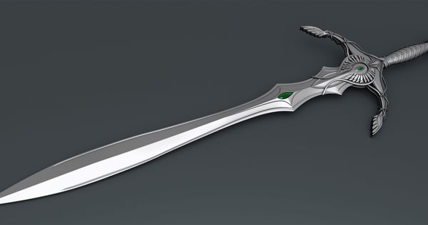
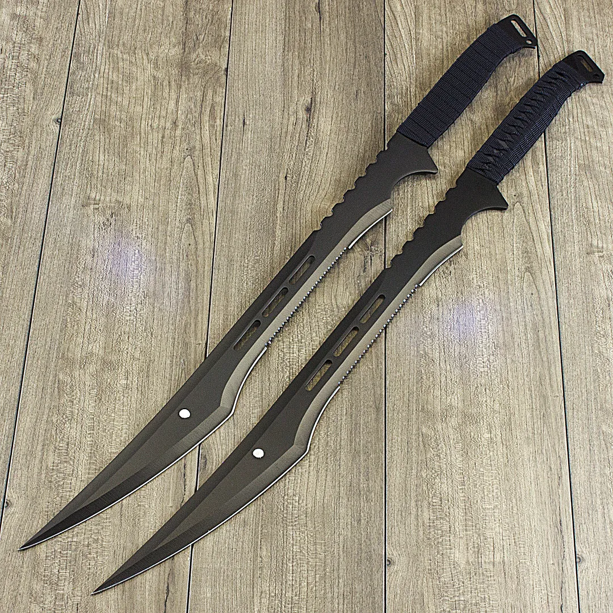
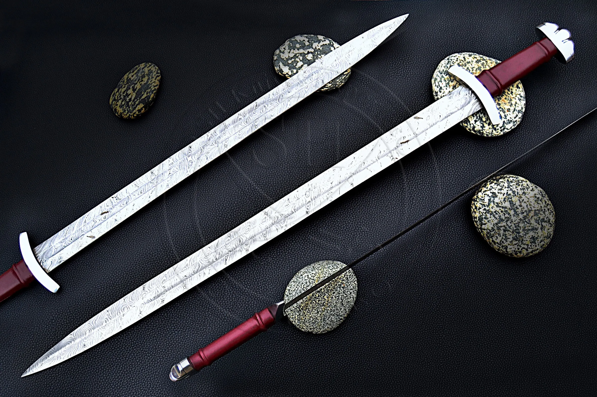
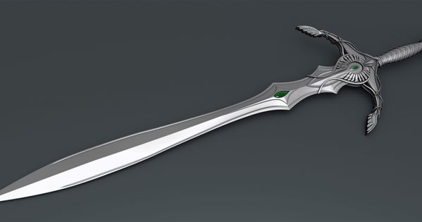
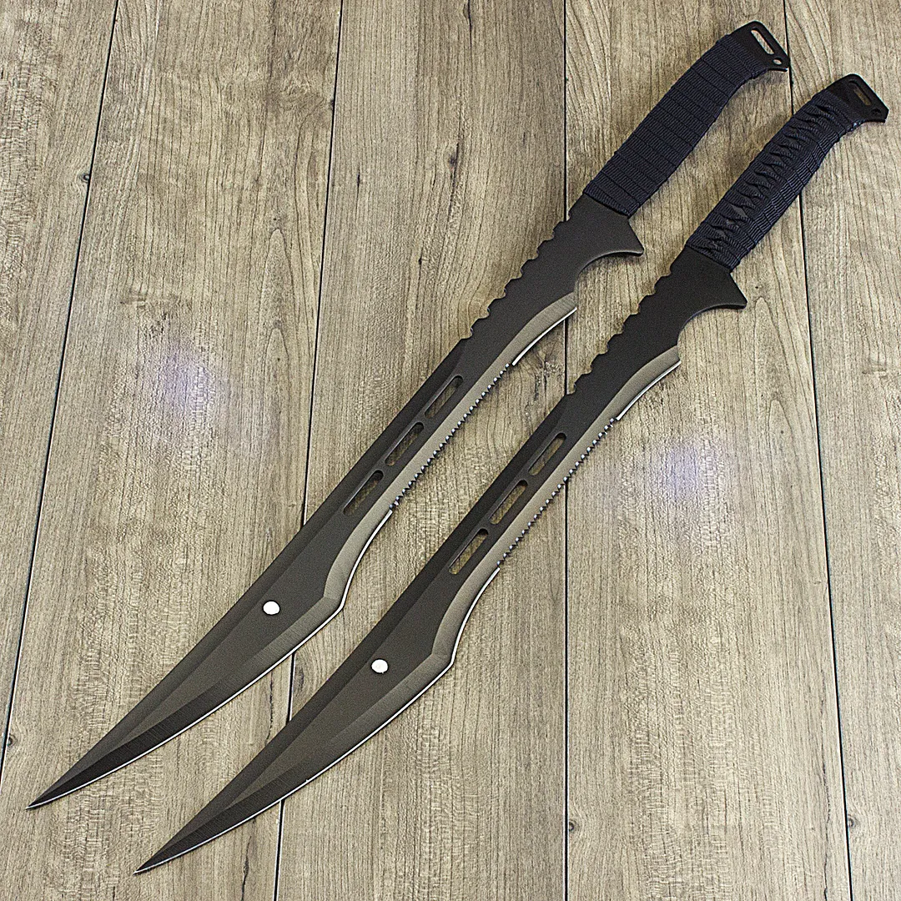

This is the 1st page of Justin Hoang's Worst Website!!!
This piece of text is using a "block" display. But I'm personally not a big fan of this display so it remains
like this for this page only. As you can see, there are a lot of white dots mixed in with many sword pictures I
layed around the page. Two of the buttons will take you to two different pages while one of them takes you
to this page but in a new window. Let's see if you found any of the buttons that will take you to the other pages.
 




